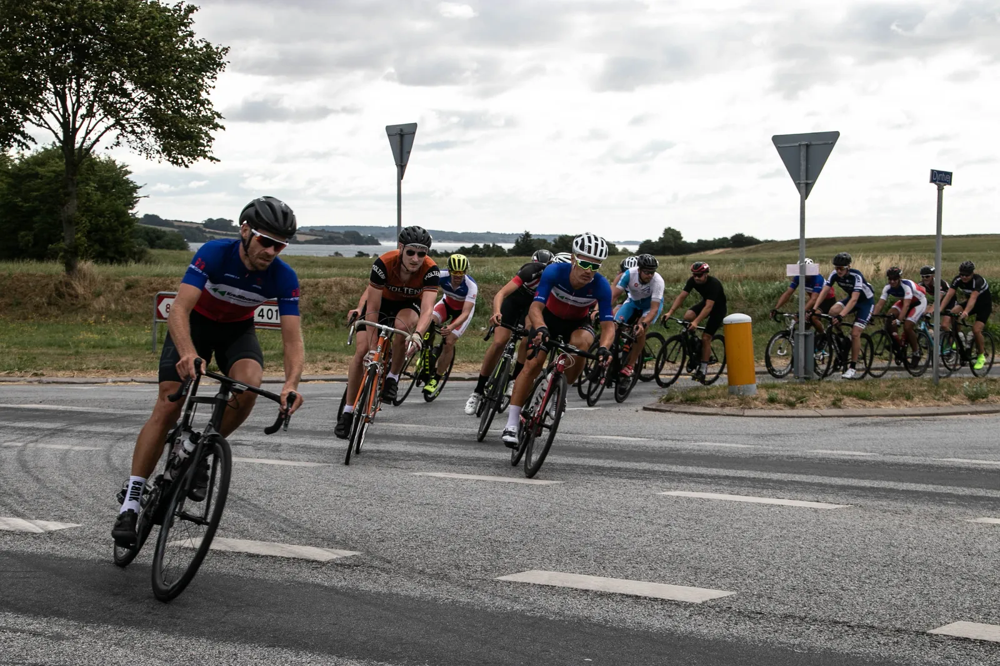
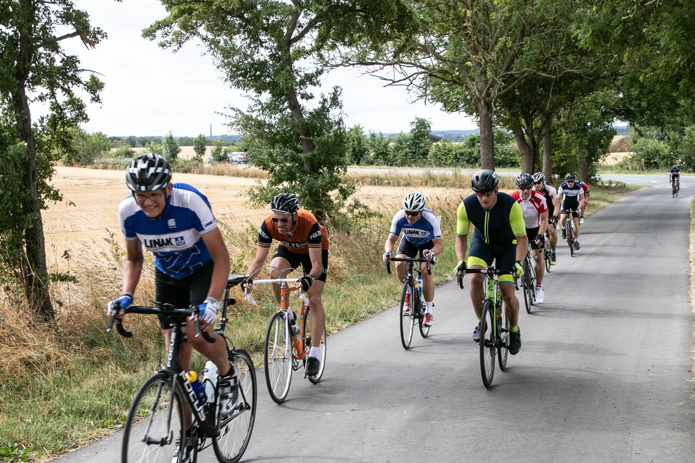

Topplaceringer ved Alssundløbet

Løjtnant Kasper Sørensen kørte sig til en 2. plads og Kaptajn Niels Bjørnsteen til en 4. plads ved dagens Alssundløb.
Alssundløbet havde 3 distancer: 50 km, 80 km og 125 km. Kasper og Niels stillede til start på 80 km, mens Steffan Sørensen valgte at køre 50 km med sin far. Der var samlet start for alle distancer og efter godt 5 km med masterbil, blev løbet skudt i gang ved foden af den 2 km lange bakke op mod Dybbøl Mølle.
– Det var en vanvittig hård start. De unge trimmede licensryttere i stramme badedragter lagde et helt vildt tempo. Jeg hang på med det yderste og med mælkesyeren dryppende ud af næsen, fortæller Niels.
Trods syreophobning og et fortsat hæsblæsende tempo hang både Kasper og Niels med i frontgruppen, der talte 20-25 ryttere. Efter mødet med Dybbøl bakke bød ruten på frisk sidevind, modvind og små hidsige bakker.
Kasper lå helt fremme i feltet og var toneangivende, hvilket ikke var let at sluge for flere strømlinede lycraryttere.


– Der blev råbt og skubbet i positionskampen i sidevinden – og det var tydeligt, at nogle licensryttere ikke syntes, at det var sjovt at se en 40 år gammel cykel og rytter i uldtøj i frontgruppen, fortæller Kasper


Niels, der ikke nåede at komme sig helt efter syrestarten, måtte slippe frontgruppen efter godt 25 km, men hægtede sig på en forfølgergruppe.
Efter 50 km delte 125 km og 80 km ruterne sig. Pludselig sad Kasper kun med én konkurrent i det, der nu var den nye frontduo. Godt 5 min efter sad Niels i en forfølgergruppe på 4 mand.
– Både Niels og jeg skal have intensiv sprintundervisning af Grane Maaløe, for jeg bliver 2’er i spurtopgøret, og Niels bliver 2’er i forfølgergruppens spurt, lyder det fra Kasper, der nu har indkasseret to 2. pladser i år.

Det var første gang Squadra Molteni stillede til start ved Alssundløbet, men helt sikkert ikke sidste.